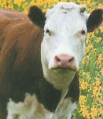

Thursday, January the 26th, 2006
back to: title, date or indexes
Yesterday's item A Series Of Unfortunate Cows had a homework assignment attached. This is just one initiative in the development of a new Interactive Hooting Yard Project. Reader Mark Williams had the good grace to send his homework in, and I reprint it below to give the rest of you some idea of the standards we are looking for.
Note to Mark : Your handwriting is lopsided. In future, please ensure that the express turbomotorcycle courier arrives at Haemoglobin Towers before midnight.

As a reminder, here is that unfortunate cow again
Here is Mark's homework:
1. A cow is not wise, thus on that premise cows will inadvertently engender unfortunate situations as proved by the four classic unfortunate situations that you have written about. So, ultimately I would require the best possible quality of life, that is, the least amount of suffering. Therefore I would not want to get myself into unfortunate situations. The inevitable swift painless death of a cow standing on some railway tracks is my choice. This is dependent on the scruples of the helm man…hmmmm…crikey, there is a possibility of an unfortunate painful death resulting from a partial maiming caused by the driver braking and thus not fully killing the cow due to the reduced speed. I am confused now.
2. I would not laugh, instead, I would bury my head in the ground. However, due to the unfortunate nature of a cow I would, no doubt, stick my head in a field full of Caper Spurge otherwise known as stinking hellebore. The Dumville family used this foul smelling plant to rid moles from the English countryside. Fascists.
3. I would tip the cow like this: “Don't laugh in the face of misfortune, little cow*, otherwise you could end up with more than you bargained for.”
4. On the assumption that an eldritch soul-transfer had taken place then it is likely that this soul would have the same intention as me in the answer to question one. Thus, I would mow the cow down with my train at the highest speed possible.
I hope this is not too late.
* NOTE : Mark appears to think that cows are tiny. They are not. One wonders if he has got a grip of the subject at all.
Hooting Yard on the Air, May the 12th, 2016 : “Vox Pop : A Pang Hill Orphan Speaks” (starts around 12:38)